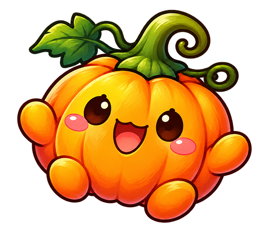

✈️ Mitta's Airline
🎃 할로윈 섬에서 길을 잃은 느요미를 도와주세요
승객: 탑승 대기 중
승객 변경
⭐ 0 / 13
📜 단서 수첩
0 / 12
탑승 인증서
✈️ 🌙 🎃
WELCOME ABOARD
Mitta's Airline
할로윈섬으로 떠나는 승객님의 탑승 수속을 시작합니다.
🎫 기존 승객으로 탑승
또는 새로운 여행 시작
승객 닉네임
최대 12글자 · 승객별 게임 진행 상황이 저장됩니다.
여행 캐릭터 선택
검은 고양이
꼬마 유령
꼬마 마녀

호박 요정
✈️ 탑승 수속 완료
✕